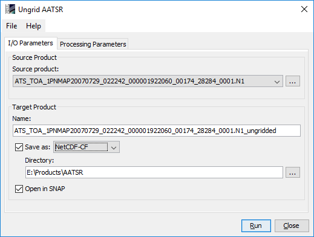
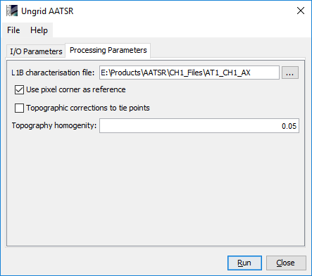

| User Interface | |
The AATSR Regridding processor can be invoked from the SNAP tool menu by selecting
the Ungrid AATSR command from the Raster menu. On the
command line the AATSR Regridding processor is
available by means of the Graph Processing Tool gpt which is located in the SNAP bin
directory. Typing gpt AATSR.Ungrid -h displays further information.

Source product: Here the user specifies the source product. The combo box presents a list of all products opened in SNAP. The user may select one of these or, by clicking on the button next to the combo box, choose a product from the file system.
Name: Used to specify the name of the target product.
Save as: Used to specify whether the target product should be saved to the file system. The combo box presents a list of available file formats. The text field or the button next to it allow to specify a target directory.
Open in SNAP: Used to specify whether the target product should be opened in SNAP. When the target product is not saved, it is opened in SNAP automatically.

L1B Characterisation File: Choose a AATSR L1B Characterisation file from your file system. If provided, it will be used to determine the first forward and nadir pixel. If not, the default values of 1305 for the first forward and 213 for the first nadir pixel will be used. This parameter is optional.
Pixel Corner Reference: Choose the pixel coordinate reference point for use in the output file. Check for Corner (default), un-check for Centre.
Topographic corrections to tie points: If checked, topographic corrections to tie-points will be applied.
Topography homogenity: When topographic correction to tie points is selected, this determines the distance in image coordinates that a pixel can have to have the topographic correction applied.